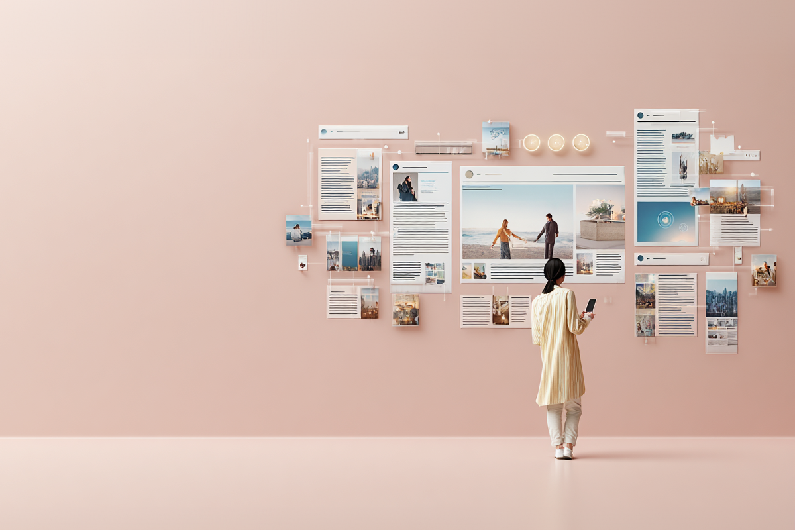
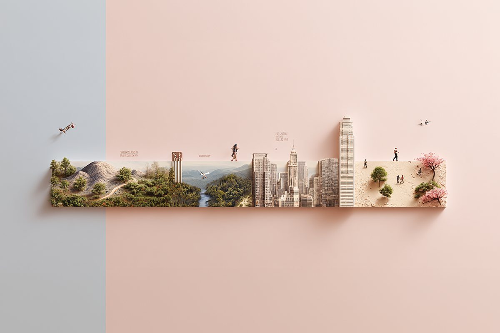
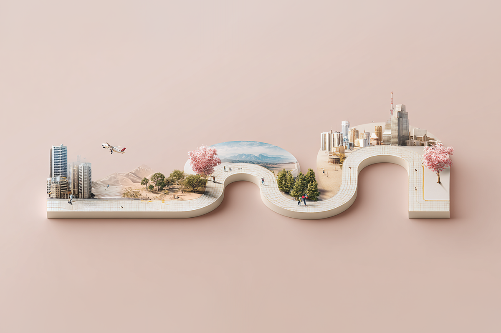
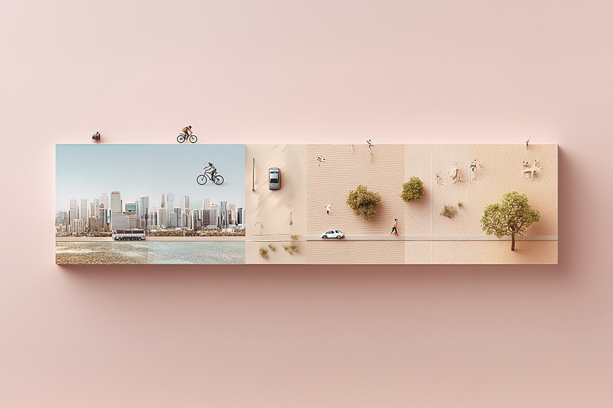
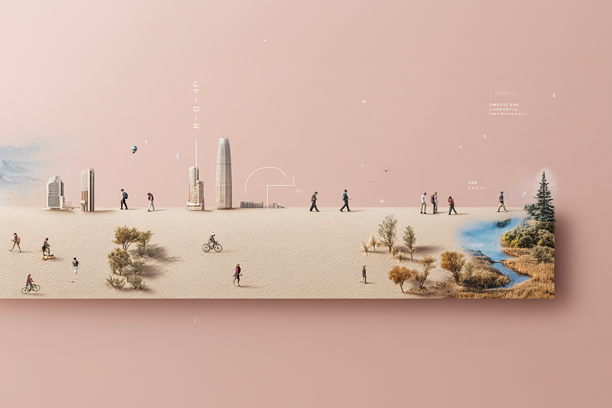
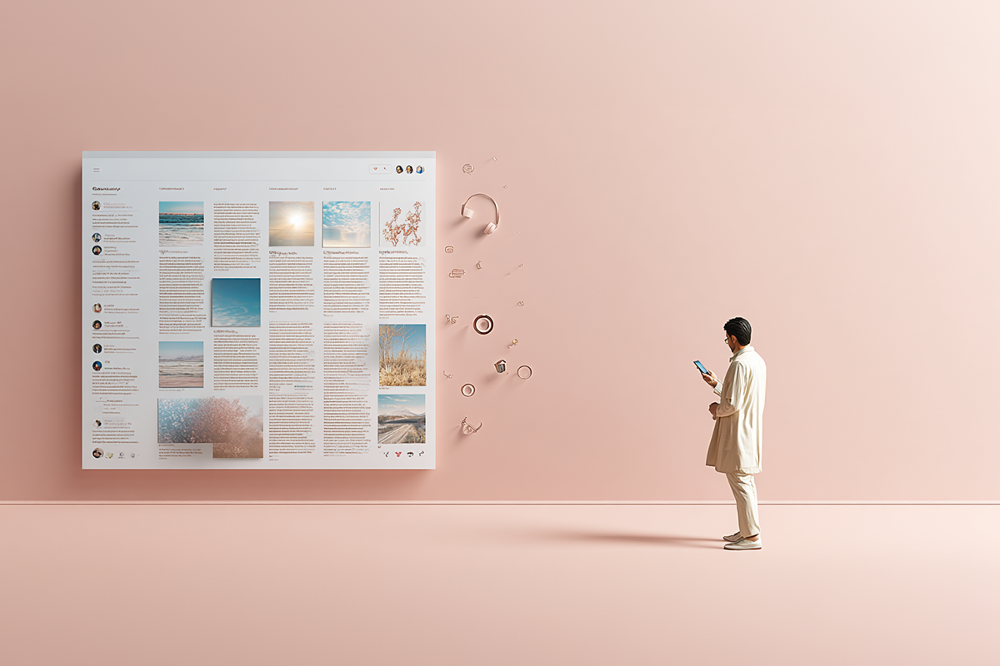

Dónde mirar cuando todo compite por tu atención
Una guía para encontrar panoramas culturales
Una guía para encontrar panoramas culturales

En tiempos de exceso de información, encontrar panoramas de fin de semana y planes entretenidos parece una odisea. La cantidad de propuestas en Instagram, TikTok y otras redes, más desinforman que informan.
Más allá de las páginas para encontrar conciertos (como Songkick), existen formas de encontrar buenas alternativas para hacer planes que se salgan de lo típico. Hicimos un barrido por todo lo disponible para lograr nuestro objetivo; acá te lo contamos.

Si lo que buscas son exposiciones de arte, instalaciones o artesanía, la página Chile Cultura es para ti. Es el portal oficial del Ministerio de las Culturas chileno, que funciona de forma colaborativa, es decir, los mismos organizadores pueden subir sus eventos.
Además, como Santiago no es Chile, tiene filtros por región y puedes encontrar eventos en las 16 regiones del país, casi todos gratis o de bajo costo.

Si sabemos bien cómo buscar para encontrar y no saturarnos, Instagram puede ser un buen aliado. Ahí, el líder indiscutido es la cuenta @panoramasgratis, con más de 143 mil seguidores. ¿Cuál es el truco? Crear una carpeta específica en el archivo de Instagram para guardar estos posts. Si no, buena suerte tratando de encontrar el post que crees haber visto días atrás.
Antes de TikTok y los reels, la programación cultural se revisaba directamente en las carteleras, que aparecían incluso en los diarios nacionales. Y aunque suene anticuado o sorprendente, revisar el diario o las revistas que vienen sigue siendo una de las formas más confiables de enterarse de buenos panoramas.

Si tu foco son los eventos de bienestar o deportivos, Eventrid es el lugar. Ahí se publican corridas, eventos de yoga y campeonatos de bicicleta donde se pueden comprar las entradas ahí mismo.
Complementar esta búsqueda con comunidades activas en Instagram y Strava (la app de deporte) permite descubrir actividades espontáneas, rutas grupales y eventos gratuitos que muchas veces no aparecen en los circuitos tradicionales.

Y si hablamos de turismo, este verano la tendencia se está moviendo hacia experiencias más completas. Un buen ejemplo es la reciente reapertura del Parque Cerro Philippi en Puerto Varas, donde se realizó el Carnaval del Sur en noviembre pasado. Allí, se llevó a cabo un proyecto de recuperación patrimonial que transformó uno de los cerros históricos de la ciudad en un parque urbano con increíbles vistas al lago Llanquihue.
Algo parecido está pasando en el norte del país, donde el astroturismo en San Pedro de Atacama se ha consolidado como uno de los panoramas más buscados del verano. Observatorios abiertos al público en uno de los cielos más limpios del planeta convierten la contemplación del universo en una experiencia al alcance de todos.

Interesante, ¿cierto? Al final, los mejores planes no siempre son los más virales, sino los que logran sacarnos de la rutina o del piloto automático. En tiempos donde todo compite por nuestra atención, regalarle espacio a la cultura, al deporte y a las experiencias reales puede ser también una forma de vivir más felices.
Y como salir a buscar nuevas experiencias también implica moverse con tranquilidad, si tu plan es recorrer el país, no olvides contratar tu Seguro de Auto en Compara. Y si vas a cruzar fronteras, tu Asistencia en Viaje puede marcar la diferencia.
 Cultura
CulturaSé que suena raro hablar de calor extremo mientras en Chile todos están buscando la parka más gruesa del clóset.
 Cultura
CulturaEl hecho de que estemos entrando al mes de julio no se puede creer. Pero lo que tampoco se puede creer es la cantidad de artistas que han…
 Cultura
CulturaCuando hablamos de trabajos clásicos de la música chilena, siempre se nombran los discos de Violeta Parra, Víctor Jara, Los Jaivas o…